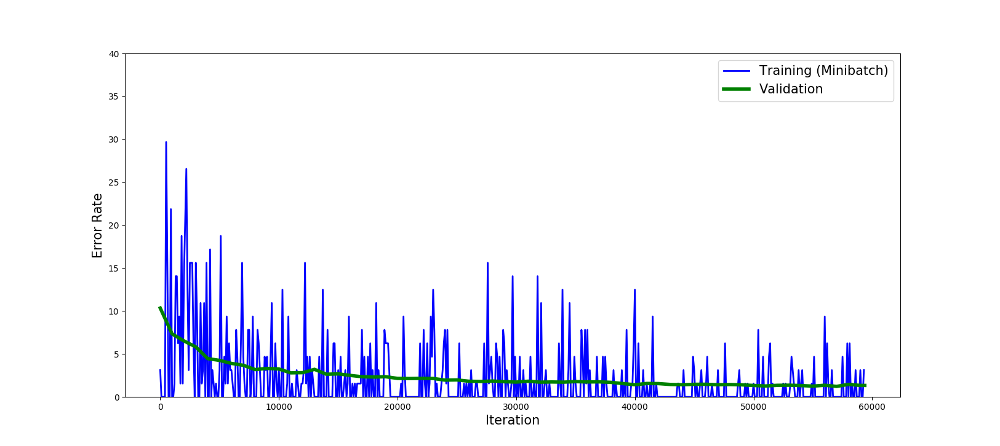
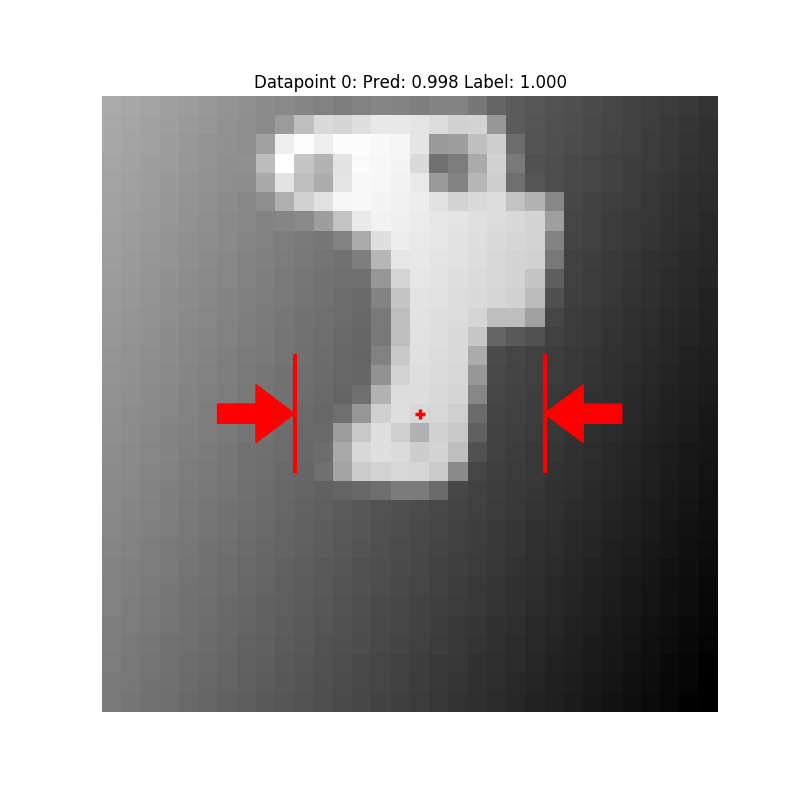

Overview¶
The tutorial covers the two main use cases of the gqcnn package:
- Training GQ-CNNs on offline datasets of point clouds, grasps, and grasp success metrics.
- Grasp Planning on RGBD images using trained GQ-CNNs.
Click on the links or scroll down to get started!
Training¶
This tutorial walks through the scripts training.py and visualize_predictions.py which are included in the gqcnn repository under tools/. The corresponding configurations can be found in cfg/tools/.
First we’ll train a network following training.py.
Setup¶
Dataset¶
Download the sample dataset from Box to a location of your choice and unzip the dataset. The sample datset is the Adv-Synth dataset from the Dex-Net 2.0 RSS Paper, which contains roughly 189,000 datatpoints (1.5 GB) from eight objects with challenging geometry.
Imports¶
To get started in Python, import the GQCNN, DeepOptimizer, GQCNNAnalyzer, and YamlConfig objects:
from gqcnn import GQCNN, DeepOptimizer, GQCNNAnalyzer
from autolab_core import YamlConfig
Configuration Files¶
Scripts in the gqcnn package use YAML configuration files to specify parameters. This tutorial uses three configuration files which have templates in the gqcnn repo under the cfg/tools directory:
cfg/tools/training.yaml
cfg/tools/analyze_gqcnn_performance.yaml
cfg/tools/gqcnn_prediction_visualizer.yaml
Edit the dataset_dir parameter of the training configuration file (ex. training.yaml) to point to the location where you unzipped the dataset:
dataset_dir: /your/path/to/example/dataset
Also edit the output_dir parameter to point to a directory to save the GQ-CNN weights in:
output_dir: /path/to/your/model/save/location
Then load the training config file in Python by instantiating a YamlConfig object, which allows the parameters to be accessed like a Python dictionary:
train_config = YamlConfig('/path/to/your/training/configuration') # Sample config: 'cfg/tools/training.yaml'
Many objects in the gqcnn package are constructed with parameters contained in a single dictionary-like object. For simplicity, in this example the GQ-CNN parameters (e.g. architecture) and learning parameters (e.g. learning rate) are specified in same training configuration file.
Read the parameters for the GQ-CNN by running:
gqcnn_config = train_config['gqcnn_config']
Training a Network from Scratch¶
GQ-CNNs can be trained using a DeepOptimizer object, which facilitates dynamically loading and queueing datapoints from a dataset during training.
Let’s start by training a GQ-CNN from scratch on the Adv-Synth dataset. There are just two steps:
Initialize a GQCNN and a DeepOptimizer:
gqcnn = GQCNN(gqcnn_config) deepOptimizer = DeepOptimizer(gqcnn, train_config)
Train the GQCNN:
with gqcnn.get_tf_graph().as_default(): deepOptimizer.optimize()
You should see output on the terminal logging the minibatch error and occasionally the validation error. Training on the the Adv-Synth dataset for 25 epochs took 74 minutes on a GeForce GTX 980 GPU.
By default, models will be saved to the location specified in output_dir parameter of your training configuration file in a subdirectory with a random 10-character string, like model_ewlohgukns. This prevents overwriting previous models when training multiple times.
Dataset Splits¶
The DeepOptimizer class randomly samples a new training-validation split every time a new model is trained. This help to prevent overfitting.
There are three options for choosing the dataset splits which can be configured by changing the data_split_mode parameter of the training configuration file:
- image_wise: splits by individual datapoints to test memorization.
- stable_pose_wise: splits by the stable resting poses of objects on a table to test generalization to new object orientations.
- object_wise: splits by the object to test generalization to novel objects.
Visualizing Training Progress¶
Since training may take hours to days, we provide several tools for monitoring progress.
Python Plotting¶
One way to monitor progress is the plot_training_losses.py script, which plots training and validation losses on the same plot. Find the directory for the model in progress (e.g. model_ewlohgukns) and run the following in a new terminal from the root of your gqcnn repo:
python tools/plot_training_losses.py /path/to/your/model/save/location/model_dir
The training and validation curves for the example should look something like this after 25 epochs:
{kind=link}
Tensorboard¶
The DeepOptimizer supports Tensorboard to visualize various training parameters such as learning rate, validation error, and minibatch loss. Tensorboard summaries are saved in the folder tensorboard_summaries under the model directory. For example, if the model directory where the model is being saved is /home/user/Data/models/grasp_quality/model_ewlohgukns, the summaries will be stored in /home/user/Data/models/grasp_quality/model_ewlohgukns/tensorboard_summaries.
The DeepOptimizer automatically starts a local server to feed these summaries. Once you get the output message:
Launching Tensorboard, Please navigate to localhost:6006 in your favorite web browser to view summaries
then you can visualize progress by navigating to localhost:6006 in your favorite web-browser.

Prediction¶
To predict the probability of success, or grasp robustness, of a new datapoint, instantiate a GQCNN object with a path to the saved model (e.g. /home/user/Data/models/grasp_quality/model_ewlohgukns) and and call the predict() function:
images = ['array of images']
poses = ['corresponding poses']
gqcnn = GQCNN.load(model_dir)
output = gqcnn.predict(images, poses)
pred_p_success = output[:,1]
gqcnn.close_session()
The images should be specified as an N`x32x32x1 array and the poses should be specified as an `N`x1 array of depths, where `N is the number of datapoints to predict. For an example, load a batch of images from depth_ims_tf_table_00000.npz and a batch of corresponding poses from column 2 of hand_poses_00000.npz from the Adv-Synth dataset.
Analysis¶
We can benchmark the performance of GQ-CNNs using the GQCNNAnalyzer class:
analysis_config = YamlConfig('/path/to/your/analysis/configuration') # Sample config: 'cfg/tools/analyze_gqcnn_performance.yaml'
analyzer = GQCNNAnalyzer(analysis_config)
analyzer.analyze()
The analysis_config contains a list of models to analyze at once along with many analysis parameters. The GQCNNAnalyzer will calculate various metrics such as the model precision, recall, ROC, etc. and plot them. It can also visualize filters at specified layers of the network.
Results on Image-Wise Split¶
After training for the full 25 epochs, the validation error rate should be approximately 1.3%.
You should also check the Precision-Recall curve (precision_recall.pdf) and Reciever Operative Characteristic (ROC) curve (ROC.pdf) which can be found in the specified output directory for the GQCNNAnalyzer. The Precision-Recall curve should look as follows:

The ROC curve should look as follows:

Fine-Tuning a Network¶
Fine-tuning a network is similar to training one from scratch. The only difference is that we load a GQCNN from a model directory instead of creating one from scratch before optimizing:
gqcnn = GQCNN.load(model_dir)
deepOptimizer = DeepOptimizer(gqcnn, train_config)
with gqcnn.get_tf_graph().as_default():
deepOptimizer.optimize()
Visualizing GQCNN Predictions¶
The gqcnn package also has the ability to visualize predictions of a GQCNN on a dataset with the GQCNNPredictionVisualizer class. The GQCNNPredictionVisualizer can visualize false positives, false negatives, true positives, and true negatives on a dataset. This parameter can be toggled in the provided configuration file.
Let’s visualize some predictions following visualize_predictions.py.
To use the GQCNNPredictionVisualizer first import the class and any other useful imports:
from autolab_core import YamlConfig
from gqcnn import GQCNNPredictionVisualizer
Next, load a the configuration file:
visualization_config = YamlConfig('/path/to/your/visualization/configuration') # Sample config: 'cfg/tools/gqcnn_prediction_visualizer.yaml'
Finally, create a GQCNNPredictionVisualizer and visualize:
visualizer = GQCNNPredictionVisualizer(visualization_config)
visualizer.visualize()
This will load a dataset in batches and individual datapoints will be printed out. For the specified datapoints(FP/TP/FN/TN) a visualization window will show up showing the object and predicting grasp like this:
{kind=link}
Grasp Planning¶
Grasp planning involves searching for the grasp with the highest predicted probability of success given a point cloud. In the gqcnn package this is implemented as a policy that maps an RGBD (color + depth) image to a 6-DOF grasping pose by maximizing the output of a GQ-CNN with the Cross Entropy Method. For details, see our ICRA 2017 workshop abstract.
This part of the tutorial walks through the script policy.py which is included in the gqcnn repository under examples/. The corresponding template configuration file is cfg/examples/policy.yaml.
Edit the Configuration File¶
First, update the parameters of your configuration file (ex. policy.yaml) to point to a GQ-CNN model:
policy:
gqcnn_model: /path/to/your/model/
For example, this could be the path to the model trained in the previous example (e.g. /home/user/Data/models/grasp_quality/model_ewlohgukns)
Run the Example Python Script¶
From a new terminal run the following out of the root of your gqcnn repo:
python examples/policy.py /path/to/your/policy/configuration
You should see a sequence of images similar to these:

The final planned grasp will be overlayed on the original color and depth images

You can also try out grasp planning on multiple objects by changing the input data directory in the configuration file:
sensor:
image_dir: data/rgbd/multiple_objects
ROS Package¶
We are currently developing a ROS service that can be used to plan grasps from RGBD images using GQ-CNNs. We plan to release the ROS package by June 28, 2017.